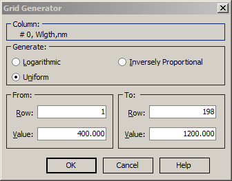

Grid Generator
Grid Generator
Navigation: OptiLayer Menu Commands > Edit Menu >
Grid Generator
` <idh_column_editor.html>`__ ` <idh_menu_edit.html>`__ ` <idh_import.html>`__
The Grid Generator is another convenient tool to fill spreadsheet columns with data. It allows filling a column with a set of uniformly or logarithmically increasing values, or inversely proportional values..

The Column field displays which column of the spreadsheet is being edited. Specify the starting and final rows to be filled in the From and To fields; by default, they are set to the selected rows in the spreadsheet (if any). Specify the starting and ending values in the Value fields. After pressing OK, the specified rows of the selected column will be filled with uniformly or logarithmically increasing (decreasing) values according to the choice in the Generate field. If you select the Inversely Proportional mode, the grid will be uniform with respect to the inverse parameter of the column. For example, if your spectral parameter is the wavelength, then the grid will be uniform by wavenumbers, and vice versa.
 Note: It is possible to specify a range of rows
that is wider than the range of rows available in the current
spreadsheet. In this case, the spreadsheet will be expanded
accordingly to accommodate the specified range of rows.
Note: It is possible to specify a range of rows
that is wider than the range of rows available in the current
spreadsheet. In this case, the spreadsheet will be expanded
accordingly to accommodate the specified range of rows.
See also: Column Editor.